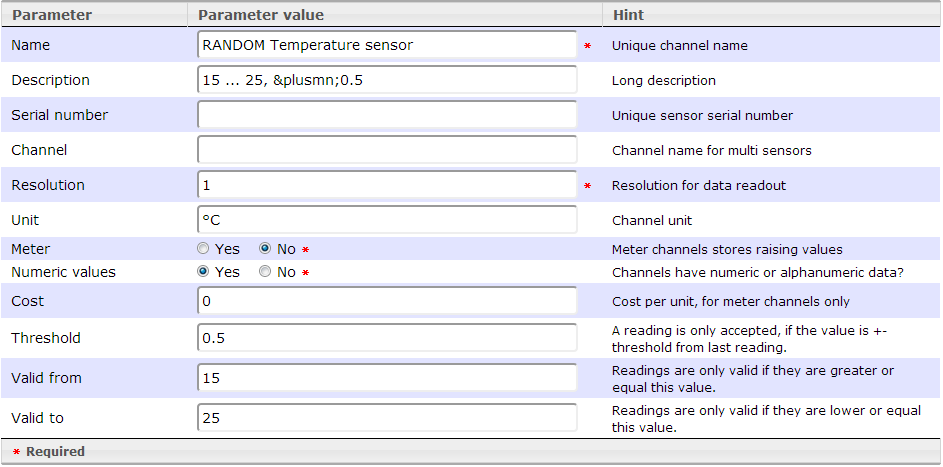
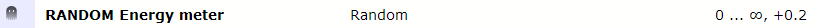

To get a 1st impression of the system, 2 fake channels are installed by default.
They deliver random data on each request.
To get a feeling with charts, you can use them to play around with the presentation settings.
RANDOM Temperature sensor
This sensor simulates a temperature sensor in °C with a valid range of 15 ... 25 °C.
Each "next" reading differs max. ± 0.5 °C from last one.

RANDOM Energy meter

This sensor simulates a energy meter with kilo watt hours readings, starting by 0 with (nearly :-) open end.
Each "next" reading differs max. + 0.2 kilo watt hour from last one.
The consumption cost 0.20 per kilo watt hour, because of the unit watt hours is it set to 0.0002
Please note: The readings here are in kilo watt hours, to get watt hours out, the resolution is set to 1000.

Created with the Personal Edition of HelpNDoc: Create iPhone web-based documentation